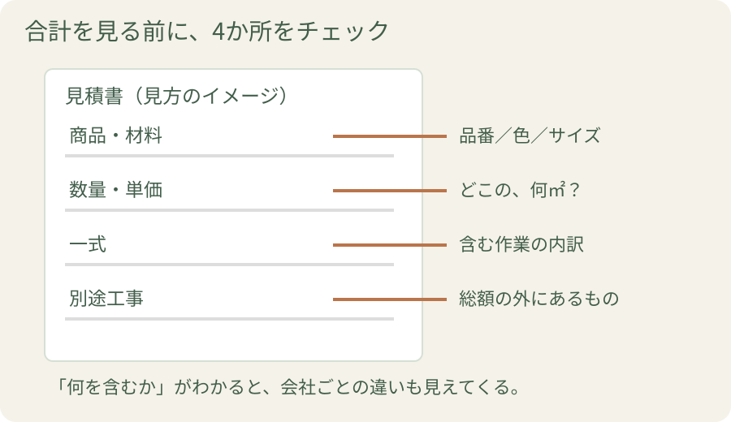
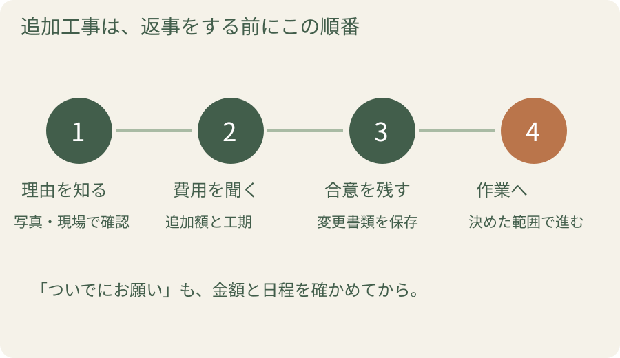

A社とB社の見積もり。安いほうに決めたいけれど、完成後に「それは別料金」と言われたら困りますよね。見比べるコツは、同じ仕上がりまで含んだ金額かを確かめること。次の打ち合わせでそのまま使える聞き方をまとめます。
1. 見積書と、工事する場所を一緒に見る

図を拡大して見る見積書だけを眺めると、専門用語が並んでいるように感じます。担当者と工事する場所を見ながら説明してもらうと、項目と実物が結びつきます。
例えばキッチン交換なら、新しいキッチンの代金のほか、古い設備の撤去・処分、配管や電気、周囲の床や壁の仕上げなどを確認します。どの作業が必要で、今回どこまで行うかは現場によって違います。
私なら、「完成したとき、どの部分が今のまま残りますか」とも聞きます。 新しくなる場所と残る場所が見えると、追加したい希望にも早く気づけるからです。
2. 「一式」には何が入っている？
金額を比べる前に、見積書の日付と有効期限、税込かどうかを見てください。 前に受け取った金額で今も依頼できるのかを確かめてから、同じ工事範囲で比べます。現地調査前の概算なら、調査後にどの項目を確定する予定かも聞いておきましょう。
「一式」と書かれた項目は、まとめられた作業の中身を説明してもらいます。項目名だけで良し悪しを決めるより、範囲や内容がわかることが大切です。
| 見積書の欄 | 聞いてみたいこと |
|---|---|
| 商品・材料 | 型番、サイズ、色、選んだオプションは合っていますか？ |
| 数量 | この面積や長さは、どの場所の分ですか？ |
| 一式 | どの作業をまとめた金額ですか？ |
| 別途・対象外 | 希望する仕上がりにするには、他に何が必要ですか？ |
複数社を比べるときも、この四つをそろえます。同じ「浴室リフォーム」でも、脱衣室の壁紙まで含む案と、浴室だけの案では総額が変わります。見積書同士の違いに印を付けて、担当者に理由を聞いてみましょう。
安い理由が「範囲の違い」なら、条件をそろえる
| 比べる項目 | A社の提案例 | B社の提案例 |
|---|---|---|
| 浴室本体 | 同じ候補商品 | 同じ候補商品 |
| 脱衣室の壁紙 | 張り替えを含む | 現在のまま |
| 分電盤からの電気工事 | 費用に含む | 別途見積もり |
| 次に聞くこと | 希望する範囲をそろえた総額はいくら？ | |
実在の見積もりではなく、比較の考え方を示す例。
「同じ商品なのに価格が違う」と感じても、周囲の仕上げや電気工事まで見ると理由がわかることがあります。逆に、望んでいない工事が含まれていれば、外した案も相談できます。契約前の見積書で判断に迷う場合は、住まいるダイヤルの見積書相談も利用できます。
3. 追加費用が出る場面を先に聞く
追加費用が生じる場面には、住まい手が商品や工事を変更する場合と、解体して初めて下地の傷みなどがわかる場合があります。例えば、浴室を解体したら土台の腐食や配管の劣化が見つかり、交換する設備とは別に補修が必要になるケースです。
契約前に聞きたいのは、「この家で、まだ確認できていない部分はありますか」「追加になるとしたら、どんな作業が考えられますか」の二つ。現地調査でわかる範囲と、開けてから確かめる部分を説明してもらいます。
予算には、工事以外に必要な費用も書き出しましょう。仮住まい、荷物の保管、家具の買い替えなど、わが家で必要な項目を加えます。追加工事の予備費は、全家庭一律の割合で決めるより、建物の状態と工事範囲を踏まえて担当者に相談するのがおすすめです。
追加が必要と言われたら、この一言
「どこの傷みで、なぜ今直す必要がありますか？ 写真を見ながら、費用と完成日の変更を説明してもらえますか？」
4. 工事中の変更は、この順番で決める
工事が始まってから「ここも直してほしい」と思うことはあります。担当窓口に伝え、次の順番で確認しましょう。

追加が必要と言われたときも、場所と理由を説明してもらいます。「必ず必要な補修なのか」「別の方法はあるか」「完成予定や生活への影響はどう変わるか」が判断の材料です。
決まった内容は、変更契約書や追加見積書などの書面で残します。メールでもやり取りを保存し、どの書類が最終版なのかをそろえておきましょう。家族の誰が返事をするかも決めておくと、別々の依頼による行き違いを減らせます。
5. 最後の請求を、約束と照らし合わせる
最後に見るのは、この足し引き
契約した金額 ＋ 合意した追加工事 − 合意した減額 − 支払い済みの金額 ＝ 今回支払う残額
各金額は税込にそろえて照合します。減額や精算の条件は契約・変更書類で確かめます。「追加したもの」だけでなく、「やめたもの」も並べるのがポイントです。
最終的な金額は、当初の契約と、その後に合意した追加・減額の内容に照らして確認します。見積書や変更書類を一つのフォルダにまとめておくと、このときに役立ちます。
説明のない項目があれば、支払う前に担当者へ内訳を聞きましょう。